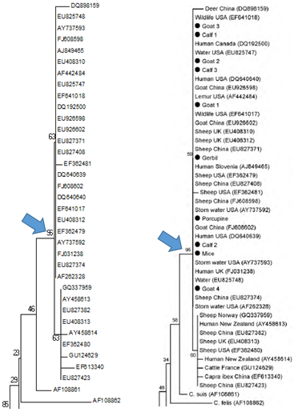
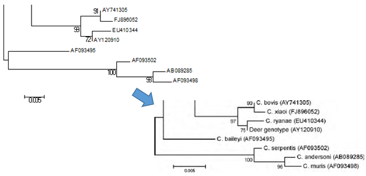

El análisis de los 3 loci para las secuencias determinadas permite obtener evidencias de la existencia de un nuevo parásito muy extendido en geografías y anfitriones mamíferos distintos al que se le denomina Cryptosporidium ubiquitum (anteriormente mal denominado por tanto como C.cervine, C.cervid, W4 o genotipo 3 genotipos). Las relaciones filogenéticas entre SSU rRNA, actina y COWP son consistentes con un nuevo clado con un valor bootstrap de 96%, 100% y 100% respectivamente.
Se refuerza por tanto la validez de C.ubiquitum a nivel de estos tres genes independientes; y se destaca su carácter genético único al distinguirlo de otras especies. A nivel de SSR rRNA la distancia por parejas con otras como C.parvum, C.suis, C.hominis y C.meleagridis va desde 0.008 a 0.020; cuando la distancia entre otras especies ya reconocidas es mucho menor (0.002 entre C.hominis y C.parvum por ejemplo). Respecto al gen de actina, podemos decir que la distancia a la especie filogenéticamente más cercana, C.suis, es de 0.112; de nuevo mayor que otras distancias que separan a especies ya definidas. Por último, con datos como la distancia de 0.104 entre el nuevo C.ubiquitum y C.hominis establecemos la misma conclusión en defensa del establecimiento de esta nueva especie para el caso de COWP.
Ver Artículo original si procede.
Los resultados obtenidos en apartados anteriores han demostrado su robustez y si los comparamos con los obtenidos por los autores del artículo de referencia encontramos mínimas diferencias; que no suponen sin embargo cambios en la conclusión final y pueden deberse a que los autores han eliminado artificialmente los espacios introducidos por el algoritmo Clustal de una forma no especificada. Se pueden observar ligeras diferencias en el orden de los OTUs del nuevo clado que asignamos y en su relación filogenética con algunos otros; no obstante todas las secuencias de interés conforman un nuevo clado con valores similares a los de los autores.
Los datos de la distancia génica calculados mediante el modelo de sustitución Kimura-2 parámetros también son muy parecidos, a nivel de milésimas, a los presentados por los autores.
Vemos el nuevo clado de interés, y en las siguientes imágenes el orden parecido que presentan otros clados y OTUs del entorno.
 Haciendo uso de las herramientas de edición de árboles, como la inversión de subárboles, la disposición de los árboles filogenéticos es más parecida. Cabe destacar que en los árboles de elaboración propia se han omitido las secuencias que los autores han ignorado y representado con un punto negro; lo que también puede ser fuente de variabilidad a la hora de inferir filogenéticamente.
 Filogenia 2014
Filogenia 2014{kind=link}
{kind=link}
{kind=link}
{kind=link}
{kind=link}